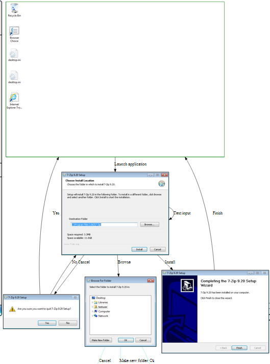
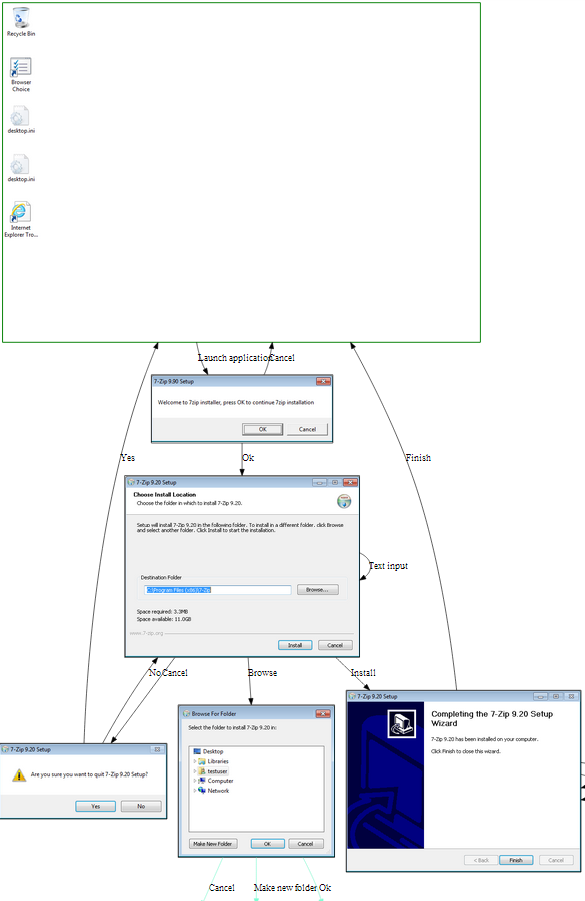
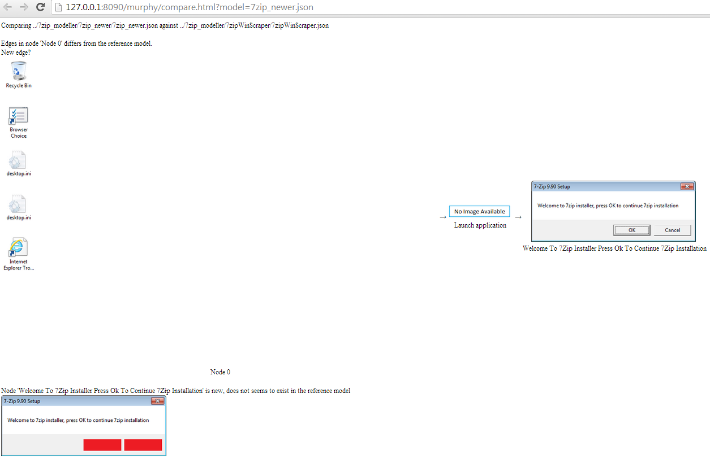
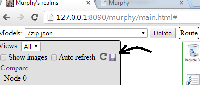
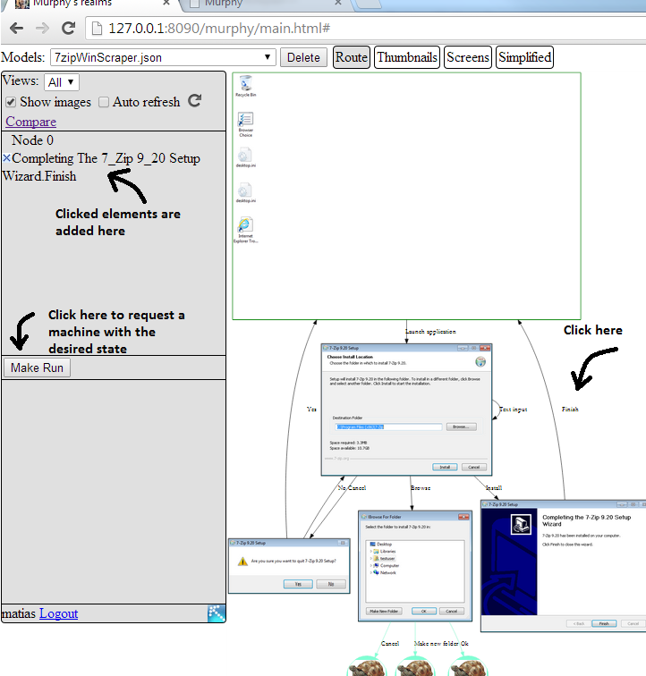
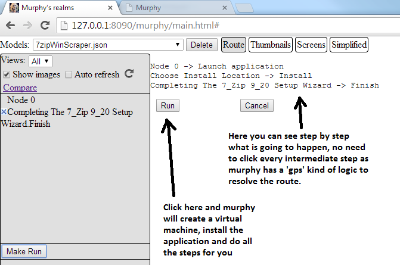
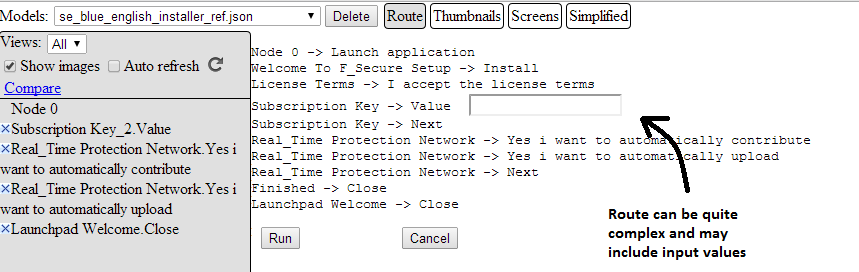

Murphy
Murphy is a set of tools oriented to help in automation, be it for testing, regression testing, application analysis, documentation, etc.
It contains many powerfull features and can be used in many different ways, for many different purposes, among them you can:
Automatically extract a model of an application, it looks like
 also visible as
also visible as 
Write powerfull and short test scripts (or generate them automatically from the model)
worker.In("Node 0").GoTo("Completing The 7_Zip 9_20 Setup Wizard").Then("Finish")
Or more verbose tests
worker.In("Node 0")
worker.Do("Launch application")
worker.Do("Install")
worker.Do("Finish")
Compare 2 releases of an application and see what changed, for example
Old versionNew versionChanges reported
Friendly thowards continuous integration:
In addition to more traditional test automation scripts, we set up in our build automation tool a job that extracts the model 3 times a day with the latest application binaries, the model was then compared automatically
against a reference model, each time the comparison detected changes a notification was triggered and the differences reported automatically, the reference model was then updated to be the latest extracted model.
Export the model into a zip file so others can view the files with only a web browser (Very handy for translators as they can have context information of what they're working on)

Can assists manual testing tedious and repetitive actions since the model is interactive


It can also input values for you
